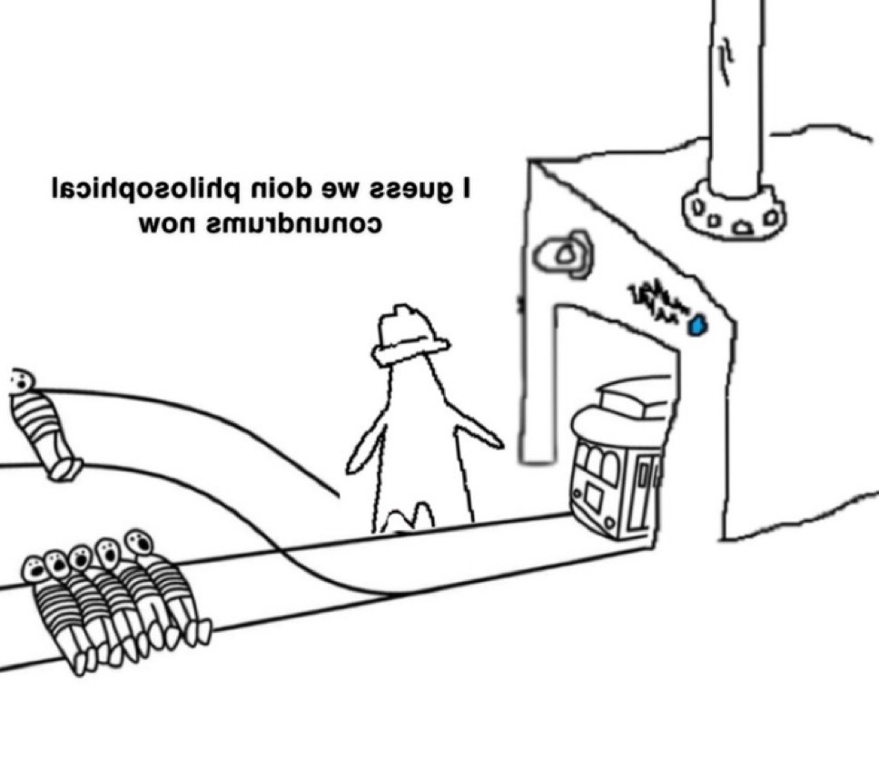
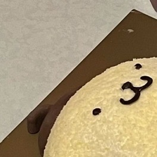
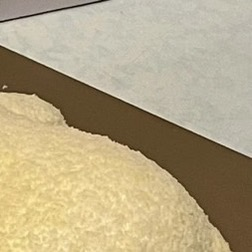
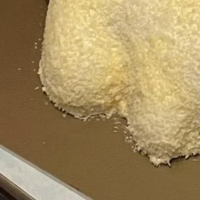
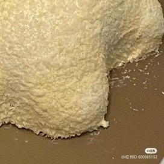

Header Logo
This website is awesome
This website has some subtext that goes here under the main title. It's a smaller font and the color is lower contrast.

Some random information

top left pompompurin rice. he shall be eaten

top right pompompurin rice. he shall be eaten

bottom left pompompurin rice. he shall be eaten

bottom right pompompurin rice. he shall be eaten
"The lotus cannot be there without the mud. Likewise, happiness cannot be there without suffering. Looking deeply into our suffering, we gain an understanding of it, which gives happiness a chance to blossom. Thus, the lotus does not have to reject the mud, and the beauty of the lotus actually gives value to the mud."
fourth block